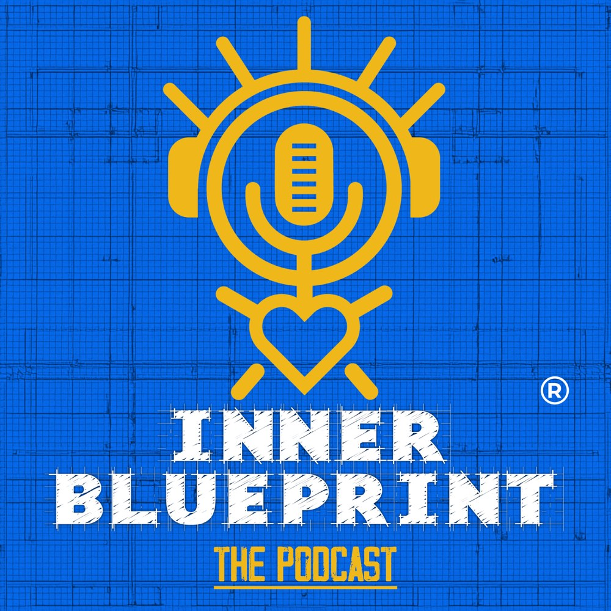

Think and Grow Rich
The foundation text of the entire lineage. Desire, faith, and organized thought as the raw materials of achievement.

These mindset resources are the open side of The Inner Blueprint: a podcast where the method is worked out loud, articles on paradigms and subconscious change, and the books that shaped the system. Start anywhere. It all points the same direction.

Real conversations about the inner work behind outer results, hosted by Shawn Feurer, with Kait joining for some of the most honest episodes.
Expect working sessions rather than lectures: paradigms, daily practice, wins and setbacks from people building businesses and rebuilding themselves. New episodes on a biweekly rhythm.
The blog goes deep on the questions the program answers: why paradigms beat willpower, how subconscious patterns form, and what actually changes them.
Written in the same plain language the program teaches in. No hype, no recycled quotes, just the mechanics of change explained so you can use them.
First articles publish alongside the site launch. The podcast above is the deepest library of the method available today.
Three books that shaped the methodology, recommended to every member.
The foundation text of the entire lineage. Desire, faith, and organized thought as the raw materials of achievement.
Where disciplined optimism started for millions. The mental stance the daily practice trains, in its original form.
The science side: how beliefs influence biology, and why changing the subconscious program changes what your body and life do with it.
The resources are the doorway. The program is the house.
Start with Self Study